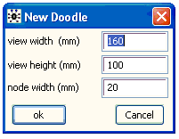
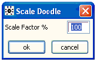

![[doodlebugs0]](doodlebugs0.bmp) DoodleBUGS: The Doodle Editor
DoodleBUGS: The Doodle Editor
Contents
General properties
Creating a node
Selecting a node
Deleting a node
Moving a node
Creating a plate
Selecting a plate
Deleting a plate
Moving a plate
Resizing a plate
Creating an edge
Deleting an edge
Moving a Doodle
Resizing a Doodle
General properties [top]
Doodles consist of three elements: nodes , plates and edges . The graph is built up out of these elements using the mouse and keyboard. The Doodle menu contains options that apply to the whole Doodle . These menu options are described below.
New... Dialog box for creating a new Doodle . Allows a choice of size of the Doodle graphic and the size of the nodes in the Doodle.

No grid, grid 1mm, grid 2mm, grid 5mm: options for the snap grid the snap grid to which the centre of each node and each corner of each plate is constrained to lie.
Scale Model: shrinks the Doodle so that the size of each node and plate plus the separation between them is reduced by a constant factor. The Doodle will move towards the top left corner of the window. This command is useful if you run out of space while drawing the Doodle. Note that the Doodle will still be constrained by the snap grid, and if the snap is coarse then the Doodle could be badly distorted.

Remove Selection: removes the highlighting from the selected node or plate of the Doodle if any.
Creating a node [top]
Point the mouse cursor to an empty region of the Doodle window and click. A new grey elipse will appear centered at the mouse cursor position. A flashing caret appears next to the blue word name . Typed characters will appear both at this caret and within the outline of the elipse.
When first created the node will be of type stochastic and have associated density dnorm.
The type of the node can be changed by clicking on the blue word type at the top of the doodle. A menu will drop down giving a choice of stochastic , logical and constant for the node type. Constant nodes are shown as rectangular boxes.
The name of a node starts with a letter and can also contain digits and the period character "." The name must not contain two successive periods and must not end with a period. Vectors are denoted using a square bracket notation, with indices separated by commas. A colon-separated pair of integers is used to denote an index range of a multivariate node or plate.
Stochastic: Associated with stochastic nodes is a density. Click on the blue word density to see the choice of densities available (this will not necessarily include all those available in the BUGS language and described in Appendix II Functions and functionals ). For each density the appropriate name(s) of the parameters are displayed in blue. For some densities default values of the parameters will be displayed in black next to the parameter name. When edges are created pointing into a stochastic node these edges are associated with the parameters in a left to right order. To change the association of edges with parameters click on one of the blue parameter names, a menu will drop down from which the required edge can be selected. This drop down menu will also give the option of editing the parameter's default value.
Logical: Associated with logical nodes is a link, which can be selected by clicking on the blue word link . Logical nodes also require a value to be evaluated (modified by the chosen link) each time the value of the node is required. To type input in the value field click the mouse on the blue word value . The value field of a logical node corresponds to the right hand side of a logical relation in the BUGS language and can contain the same functions. The value field must be completed for all logical nodes.
We emphasise that the value determines the value of the node and the logical links in the Doodle are for cosmetic purposes only.
It is possible to define two nodes in the same Doodle with the same name - one as logical and one as stochastic - in order to use the data transformation facility described in Data transformations
Constants: Constant nodes can be given a name or a numerical value.
Selecting a node [top]
Point the mouse cursor inside the node and left-mouse-click.
Deleting a node [top]
Select a node and press ctrl + delete key combination.
Moving a node [top]
Select a node and then point the mouse into selected node. Hold mouse button down and drag node. The cursor keys may also be used to move the centre of the node to the next snap grid point.
Creating a plate [top]
Point the mouse cursor to an empty region of the Doodle window and click while holding the Ctrl key down.
Selecting a plate [top]
Point the mouse into the lower or right hand border of the plate and click.
Deleting a plate [top]
Select a plate and press ctrl + delete key combination.
Moving a plate [top]
Select a plate and then point the mouse into the lower or right hand border of the selected plate. Hold the mouse button down and drag the plate. The cursor keys may also be used to move the cornor of the node to the next snap grid point. If the Ctrl key is held down while moving a plate any nodes within the plate will move with the plate.
Resizing a plate [top]
Select a plate and then point the mouse into the small region at the lower right where the two borders intercept. Hold the mouse button down and drag to resize the plate.
Creating an edge [top]
Select node into which the edge should point and then click into its parent while holding down the ctrl key.
Deleting an edge [top]
Select node whose incoming edge is to be deleted and then click into its parent while holding down the ctrl key.
Moving a Doodle [top]
After constructing a Doodle, it can be moved into a document that may also contain data, initial values, and other text and graphics. This can be done by choosing Select Document from the Edit menu, and then either copying and pasting, or dragging, the Doodle.
Resizing a Doodle [top]
To change the size of Doodle which is already in a document containing text, click once into the Doodle with the left mouse button. A narrow border with small solid squares at the corners and mid-sides will appear. Drag one of these squares with the mouse until the Doodle is of the required size.